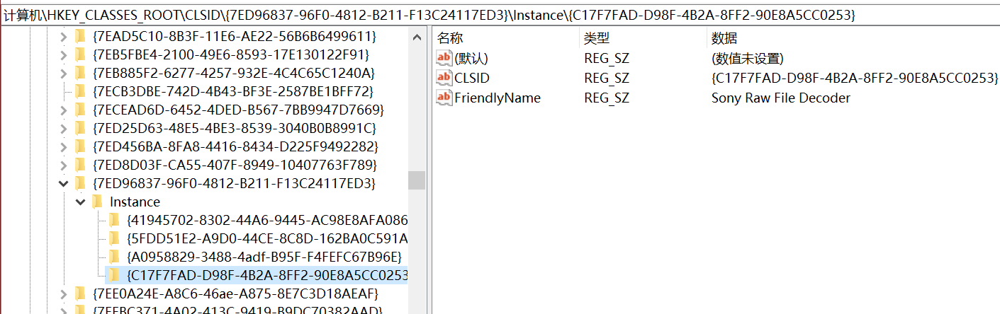
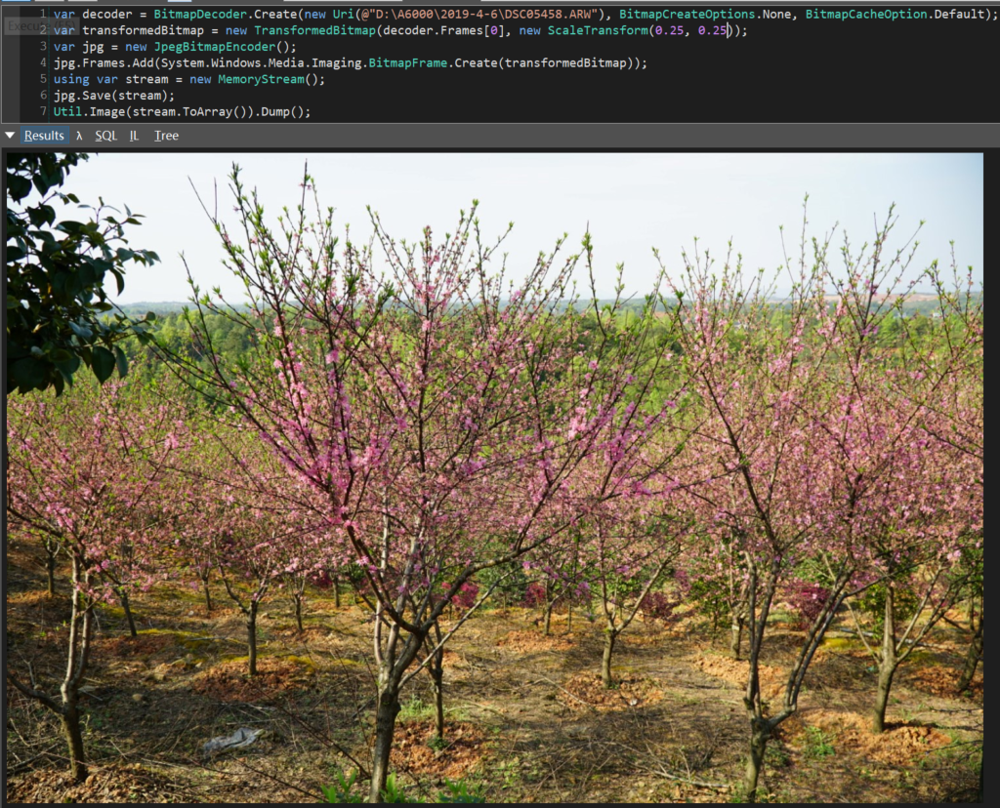

原文连接:https://www.cnblogs.com/sdflysha/p/20191208-read-sony-arw-file-using-dotnet.html
用.NET解索尼相机ARW格式照片
目前常用的照片格式是.jpg，它只能提供8bit的色彩深度，而目前主流的相机都能提供高达12bit-14bit的色彩深度，动态范围和后期处理能力也大大增加，这也是为什么不少摄影爱好者会优先使用相机提供原始格式，也就是raw格式，它记录了最多的信息。
但相机的raw格式是厂商提供的，不像jpg格式，厂商与厂商之间的格式不一样，如索尼相机一般用.ARW格式、佳能相机用.CR2格式等等。正常读raw格式文件会用Lightroom、Capture One、Camera Raw之类的软件。但如果拿着相机拍了不少漂亮相片，回家自己想来点“简单”骚操作，转个码，然后用自己搭的NAS集成一下数据什么的，就需要用到最拿手的C#了。
想象中读ARW格式的过程
代码我也不太确定要怎么写，也许……代码就这样？
using var bmp = Bitmap.FromFile(@"D:\A6000\2019-4-6\DSC05458.ARW");不出所料果然读不了，报错了，异常信息如下：
System.OutOfMemoryException: Out of memory.
at System.Drawing.Image.FromFile(String filename, Boolean useEmbeddedColorManagement)
at System.Drawing.Image.FromFile(String filename)
at UserQuery.Main() in C:\Users\sdfly\AppData\Local\Temp\LINQPad6\_xonxdhlt\pzztkn\LINQPadQuery:line 3请注意，这里抛的是OutOfMemoryException，看起来很奇怪——这里有必要说一句，根据微软官方提供的文档（https://docs.microsoft.com/en-us/dotnet/api/system.drawing.image.fromfile?view=netframework-4.8），如果GDI+不支持文件的像素格式，则就会抛OutOfMemoryException。
探寻解决办法
经过一翻Google和Stackoverflow的探索，发现原来索尼官方提供了ARW格式的解码器，下载地址如下：http://ids.update.sony.net/microsoft/SRD20_Installer0810a.exe
下载后安装即可，之后可以在注册表中查看一下，注册表位置如下是计算机\HKEY_CLASSES_ROOT\CLSID\{7ED96837-96F0-4812-B211-F13C24117ED3}\Instance\{C17F7FAD-D98F-4B2A-8FF2-90E8A5CC0253}，发现该组件确实安装正确：

安装完之后再使用GDI+的API调用一下，发现仍然会报一样的错。重启一下还是一样，调用ImageCodecInfo.GetImageDecoders()就能发现，其实在“内置”的解码器里面并没有索尼ARW文件：
*.BMP;*.DIB;*.RLE
*.JPG;*.JPEG;*.JPE;*.JFIF
*.GIF
*.EMF
*.WMF
*.TIF;*.TIFF
*.PNG
*.ICO又经过一翻搜寻，原来，索尼提供的这个安装包是集成于WIC，也就是Windows Imaging Components，因为必须要用WIC的API，SharpDX.Direct2D1和WPF都是基于WIC，按我的习惯肯定会用SharpDX，但这里为了方便大家我使用了WPF作为博客示例：
var decoder = BitmapDecoder.Create(new Uri(@"D:\A6000\2019-4-6\DSC05458.ARW"), BitmapCreateOptions.None, BitmapCacheOption.Default);
var transformedBitmap = new TransformedBitmap(decoder.Frames[0], new ScaleTransform(0.3, 0.3));
var jpg = new JpegBitmapEncoder();
jpg.Frames.Add(System.Windows.Media.Imaging.BitmapFrame.Create(transformedBitmap));
using var stream = new MemoryStream();
jpg.Save(stream);
Util.Image(stream.ToArray()).Dump();该代码成功将索尼的ARW文件转换为JPG格式，注意代码中有个0.3, 0.3，是为了显示效果，我将24M像素的原图缩放了为30% x 30%，运行效果如下：

总结
事实上除了厂商提供的库，还有许多第三方机构也提供解raw格式的库，如libraw等等。由于我WIC用得比较熟悉，我就用WIC来解了。
本文用到的索尼ARW文件可以在我的百度网盘中下载：https://pan.baidu.com/s/1kTTpwMHIiprBK2hJGPajRw 提取码: 8vpr。
喜欢的朋友 请关注我的微信公众号：【DotNet骚操作】